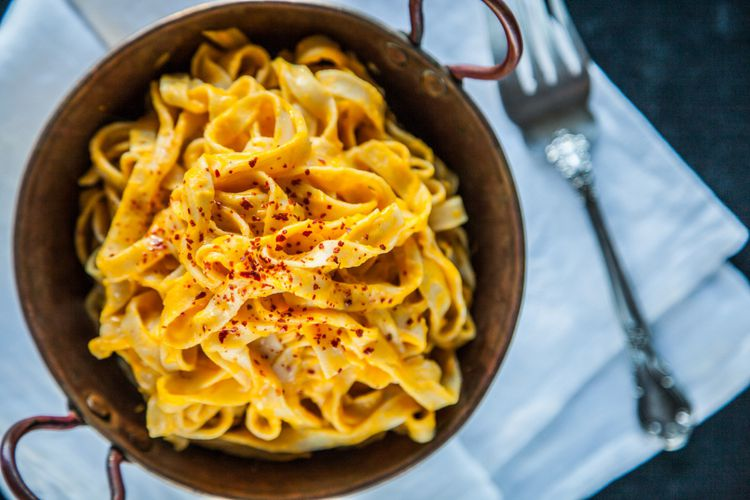

Carrot Noodles

Description
Use a vegetable peeler or spiralizer to turn carrots into gluten-free fettucine-like noodles, then top with a
luscious sauce of white wine, cream, peas, ham, and butter..
Ingredients
-
1 pound carrots
-
3 tablespoons unsalted butter
-
½ cup minced onion
-
¼ pound sliced ham, cut into thin strips
-
2 cloves garlic, minced
-
½ cup dry white wine
-
1 cup heavy cream
-
1 cup frozen peas, thawed
-
1 tablespoon Dijon mustard
-
salt and pepper to taste